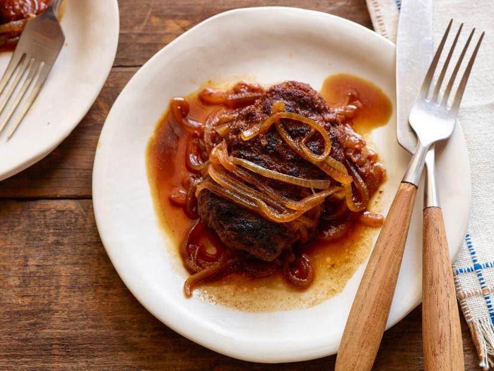

Salisbury Steak

Description
Fried steak patties in a onion gravy served over potatoes
Ingredients
Meat mixture:
- 1 1/2 pounds lean ground beef
- 1/2 cup seasoned breadcrumbs
- 1 tablespoon ketchup
- 2 teaspoons dry mustard
- 4 dashes Worcestershire sauce
- 1 cube beef bouillon, crumbled (or powdered beef base)
- Salt and pepper
- 1 tablespoon butter
- 1 tablespoon olive oil
Gravy:
- 1 whole onion, halved and thinly sliced (or diced if you prefer)
- 2 cups beef broth, more if needed for thinning
- 1 tablespoon ketchup
- 1 teaspoon seasoning sauce, such as Kitchen Bouquet, optional
- 4 dashes Worcestershire
- teaspoon cornstarch, optional
- Salt and pepper
Steps
- For the meat mixture: Combine the ground beef, breadcrumbs, ketchup, dry mustard, Worcestershire sauce, bouillon and some salt and pepper. Knead until all combined. Form into 4 to 6 oval patties, and then make lines across the patties to give them a "steak" appearance.
- Fry the patties in a skillet with the butter and oil over medium-high heat on both sides until no longer pink in the middle. Remove from the skillet and pour off any excess grease.
- For the gravy: Reduce the heat to medium and add in the sliced onions. Stir and cook until golden brown and somewhat soft, for several minutes. Add the beef stock, ketchup, seasoning sauce, if using, and the Worcestershire. Then combine the cornstarch with a little beef broth and add to the sauce if using. Stir and cook to reduce.
- Add a sprinkle of salt and pepper and more broth if needed for thinning. Then return the patties to the gravy. Spoon the gravy over the top and let them simmer and heat back up for a couple of minutes.